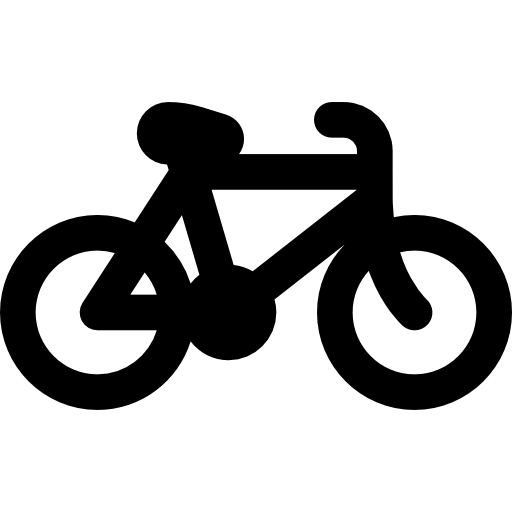
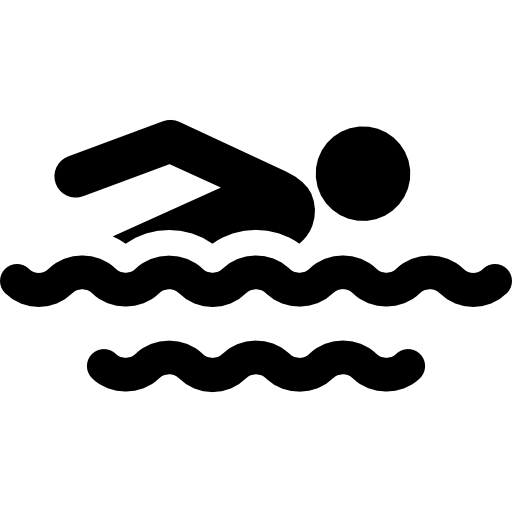

TRI
BCN
Inicio
Posts
+ Añadir Ruta
Destacado Hoy
TRI
BCN
Vive el triatlón en Barcelona
Atletismo
Loops urbanos y rutas naturales

Ciclismo
Rutas por carretera en el Maresme

Natación
Playas seguras y aguas abiertas